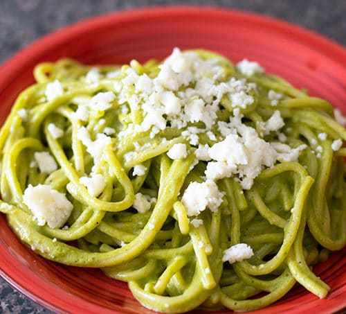

Green Spaghetti

Description
A mexican style spaghetti made with roasted poblano peppers, garlic, cilantro, onions, and more.
This dish can be made spicy by adding serrano peppers or left at a mild level with just the poblano peppers.
Ingredients
- 1 lb spaghetti
- 1 tablespoon butter
- 4 poblano peppers
- 1 cup cilantro
- 1/2 onion, finely chopped
- 1 cup sour cream
- 1 box cream cheese
- 3 cloves garlic
- 1/2 cup water
- 3 serrano peppers (optional)
- Cotija cheese
Steps
- Cook and drain the spaghetti while completing the rest of the steps.
- Roast the poblano peppers (in an oven, on the stove, in an air fryer).
- Place the roasted peppers to steam for 5-10 minutes in a zip-loc or grocery bag sealed well.
- After steaming the peppers, you now must peel the skin, and de-vein them and cut into strips.
- If you choose to use serrano peppers you should roast and steam those as well, but de-veining is not necessary.
- Place the peppers, cilantro, onion, cheeses, garlic, and water in a blender until creamy and smooth.
- Pour sauce into a large pot and simmer on a low temp adding salt and pepper as needed. Once the sauce is at a simmer you can add the spaghetti and stir.
- All done. Enjoy!